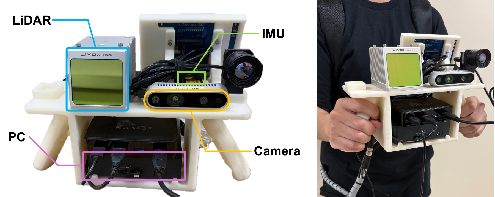
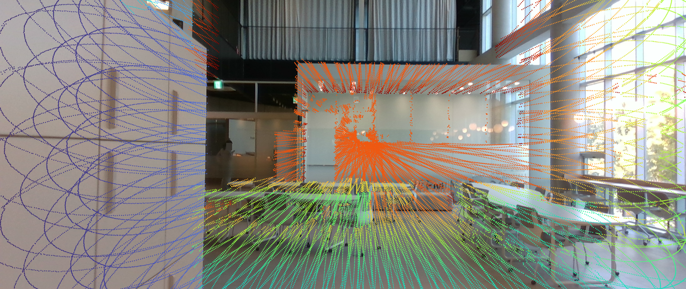
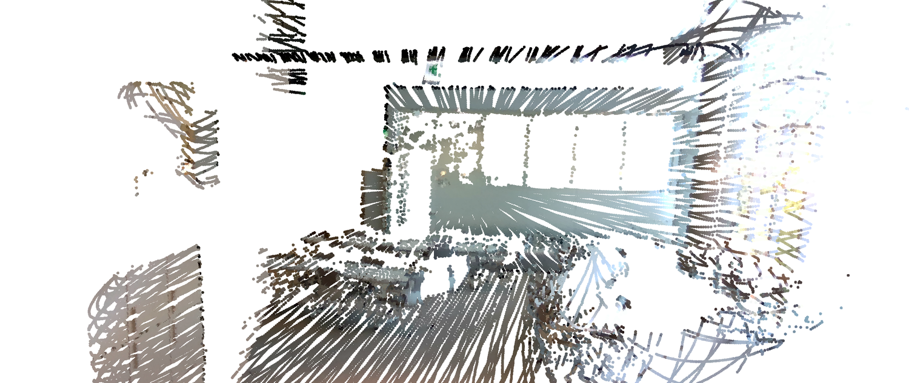
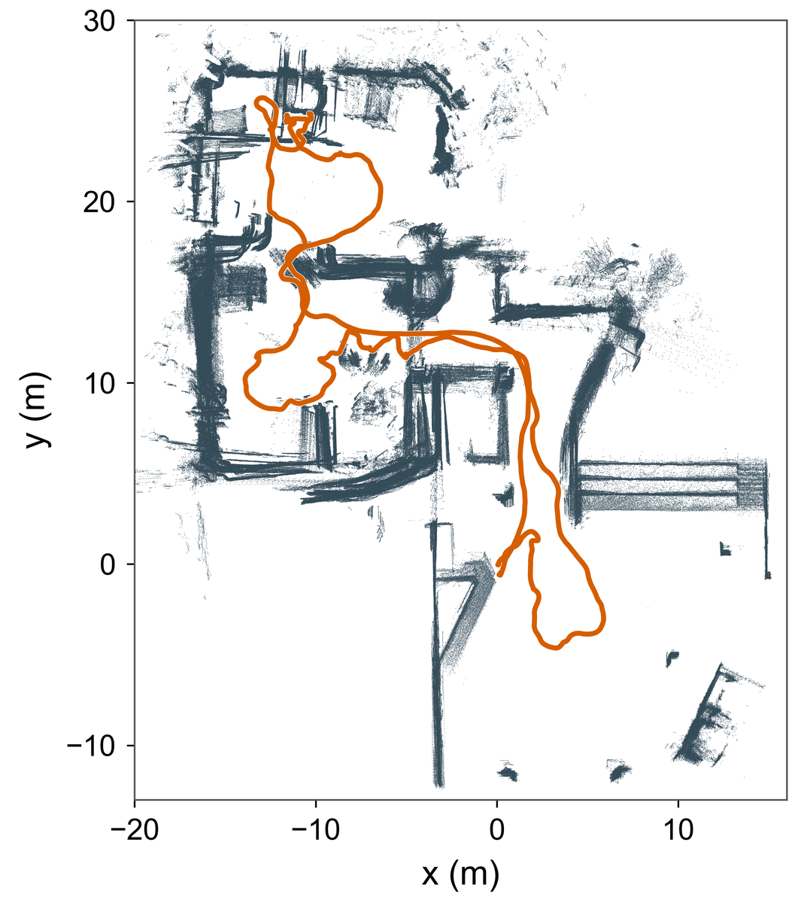
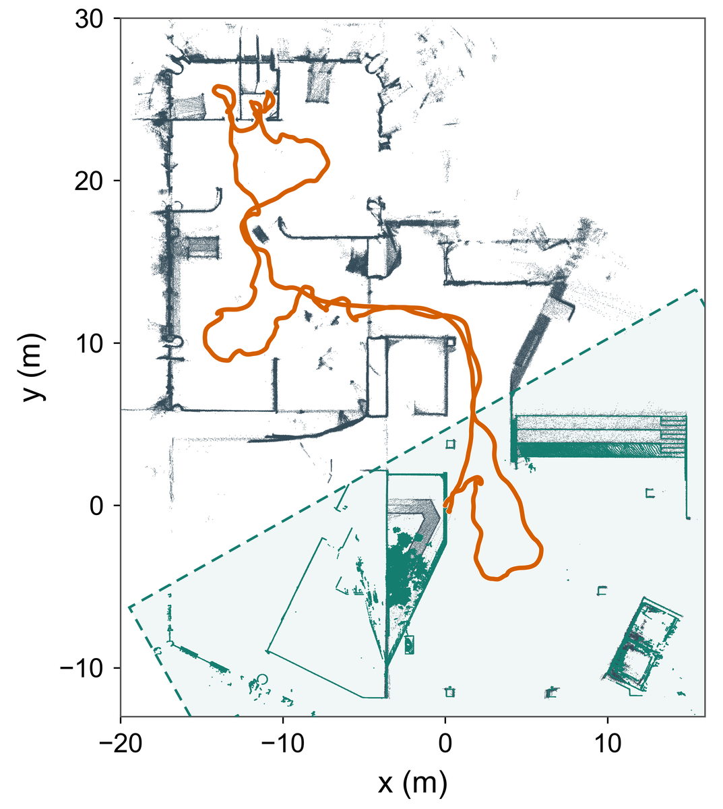

Acquisition & reference poses
The ConPR++ System
A handheld camera–LiDAR–IMU system for recording indoor and outdoor construction environments.
Sensor configuration
The handheld platform combines a monocular RGB camera, a Livox Mid-70 solid-state LiDAR, an IMU, and a host PC. The LiDAR has a 70.4° circular field of view. The portable platform enables data collection along indoor corridors, outdoor paths, and stairs near active construction sites.
The IMU supports LiDAR-inertial odometry. The camera and LiDAR capture the appearance and geometry of the same evolving environments.

| Sensor | Model | Measurements | Rate |
|---|---|---|---|
| Camera | RealSense D435i | RGB · 1280 × 720 Hall & QuadRGB · 640 × 480 Office | 10 Hz30 Hz |
| LiDAR | Livox Mid-70 | Solid-state 3D LiDAR70.4° circular FOV | 10 Hz |
| IMU | 3DM-GX5-AHRS | Attitude, angular velocity & linear acceleration | 250 Hz |
Sensor calibration
Spatial calibration
Calibration was performed separately for Office and for the later Hall and Quad recordings. RGB camera intrinsics were estimated using a checkerboard, with mean reprojection errors of 0.22 pixels for Office and 0.32 pixels for Hall and Quad.
Extrinsic calibration was based on LI-Init and Kalibr.
Both examples below qualitatively verify the camera–LiDAR extrinsics used for Hall and Quad.


Temporal alignment
All sensor measurements were timestamped at the host PC. Released files preserve their original timestamps without sensor clock-offset correction. For place-recognition evaluation, each LiDAR scan is paired with its nearest camera image within 100 ms. See the timestamp format and evaluation protocol for details.
Ground-truth pose generation
Reference poses combine LiDAR-inertial mapping, anchoring to stable structures, and trajectory refinement. All sessions within each site share a common coordinate frame.
- 01
Session mapping
Process each recording independently with Voxel-SLAM.
- 02
Map anchoring
Register local submaps to stable structures in a reference map.
- 03
Trajectory optimization
Combine consistent anchor constraints with SLAM relative-motion constraints.
- 04
Multi-view refinement
Apply additional refinement where it improves geometric consistency.
Hall & OfficeLeica terrestrial laser scanning (TLS) reference maps.
QuadA separate dense reference map acquired with the same sensor system.


Hall reconstruction comparison. Orange lines show the trajectories; teal points and the dashed boundary mark the TLS reference map and anchoring region in the refined result.
Reference-pose validation
External tracking was infeasible at the active construction sites, so the optimized trajectories serve as reference poses. Validation against held-out stable surfaces yields a median point-to-plane residual below 3 cm at every site. This is a geometric consistency measure against reference surfaces, rather than an independently measured absolute pose error.
| Site | Method | Residual ↓ (mm) | Coverage ↑ (%) |
|---|---|---|---|
| Hall | FAST-LIO2 | 34.15 | 70.14 |
| Ours | 19.94 | 75.77 | |
| Office | FAST-LIO2 | 29.77 | 65.92 |
| Ours | 29.55 | 73.64 | |
| Quad | FAST-LIO2 | 33.54 | 52.85 |
| Ours | 11.98 | 56.13 |
Residual: the median, across valid frames, of each frame’s median absolute point-to-plane residual on held-out static surfaces. Coverage: the fraction of selected evaluation points matched to the reference map within 0.2 m.